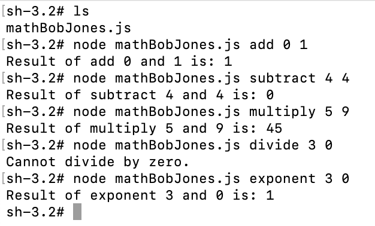

ITM 101 Week 2 - Create a Math Function
Using ChatGPT, write a simple program that will do different math operations on two values. It should support the following:
- addition
- subtraction
- multiplication
- division
- exponent
Create a file called mathYOURNAME.js (replace YOURNAME with your first and last name) to put your code into. EXAMPLE: If your name were Bob Jones, it should be mathBobJones.js
Test your code by running node in the terminal or command prompt like this "node math.js add 2 2" and that should add 2 + 2.
IMPORTANT: Test each function using YOUR OWN student ID one digit at a time and take a screenshot of the results: If your student ID (BYU I number) were 014459303. YOU MUST USE THE NUMBERS FROM YOUR ID.
EXAMPLE OF SCREENSHOT TO TURN IN (but it would be your name and your ID numbers, if you run out of numbers start over):

Ask ChatGPT: "Can you give me some simple instructions to run and test this file?"
Once you have completed the assignment, upload a copy of your mathYOURNAME.js file and a screenshot of your math.js program code working to Canvas.